Welcome to Smart House
This is a guide for customers. Please see instructions below. I hope you will ask . If there is any problem
please contact us
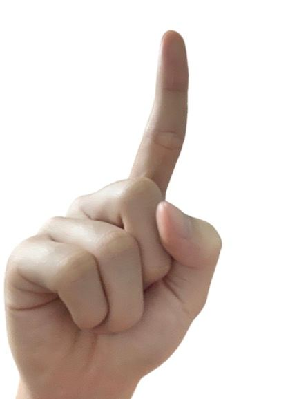
This is gesture number 1 . If you want to choose the left light device on the 2nd floor. Please do gesture
number 1
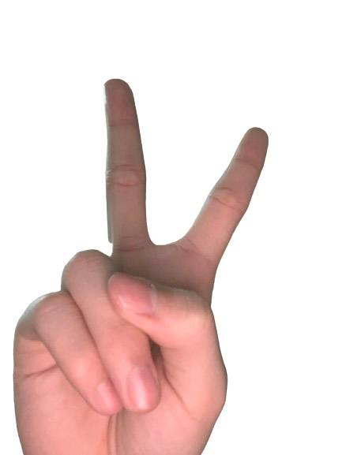
This is gesture number 2 . If you want to choose the right light device on the 2nd floor. Please do gesture
number 2
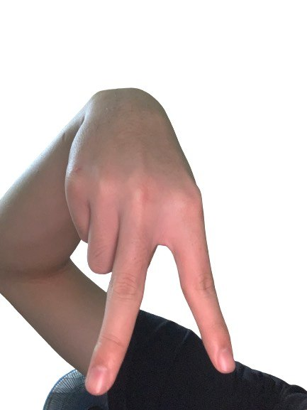
This is gesture fan . If you want to choose the fan device on the 1st floor. Please do gesture fan
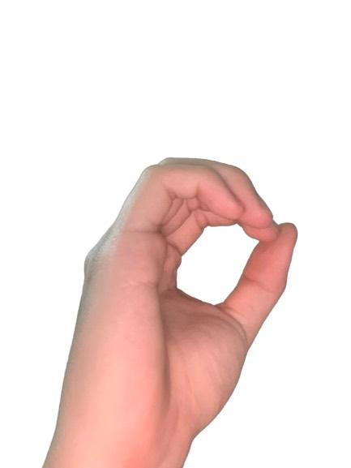
This is gesture light. If you want to choose the light device on the 1st floor. Please do gesture light
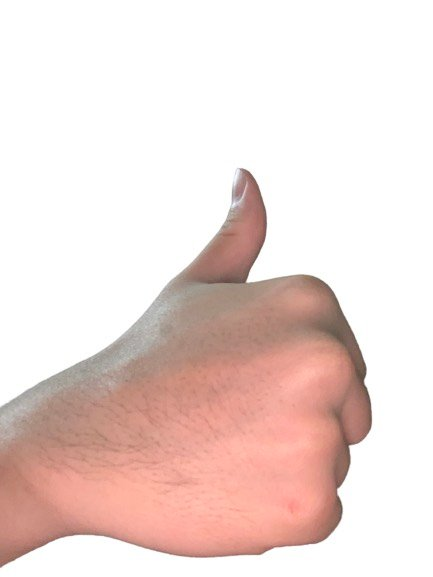
This is gesture on . If you want to turn on device. Please do gesture on
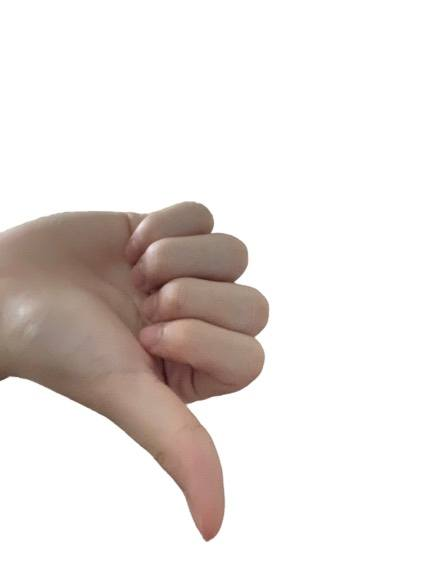
This is gesture off . If you want to turn off device. Please do gesture off
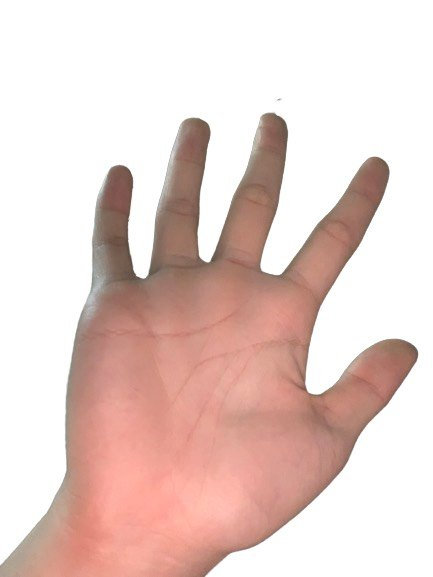
This is gesture continue . If you want to continue system. Please do gesture continue
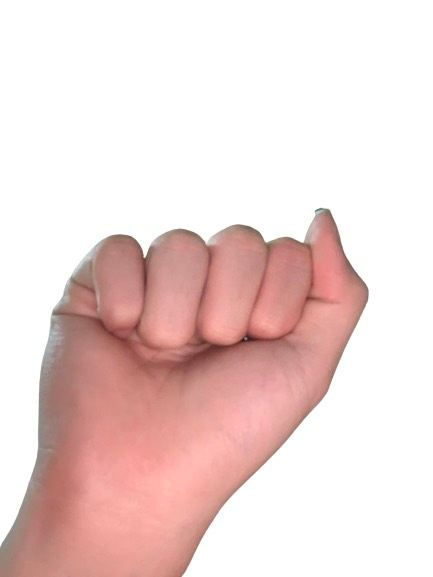
This is gesture stop. If you want to stop system. Please do gesture stop
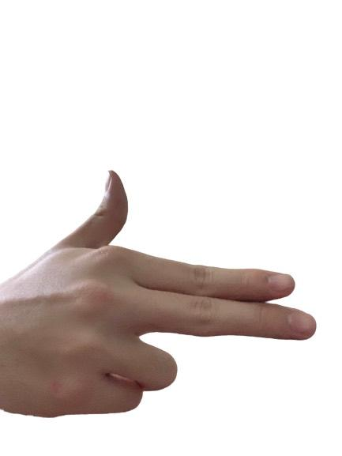
This is gesture clickmode . If you want to direct to ClickMode page. Please do gesture ClickMode
How to use
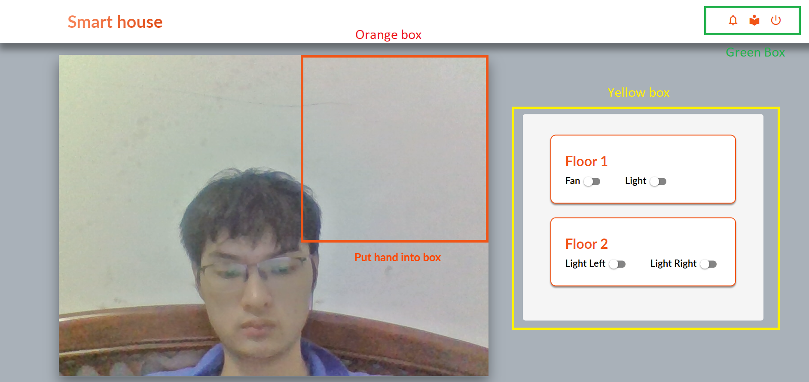
This is our UI when in HandMode. The orange box is the place to define your hand gestures. If you want to
interact with the device please put your hand in the orange box. The yellow box is used to monitor the
status of the devices in the house.
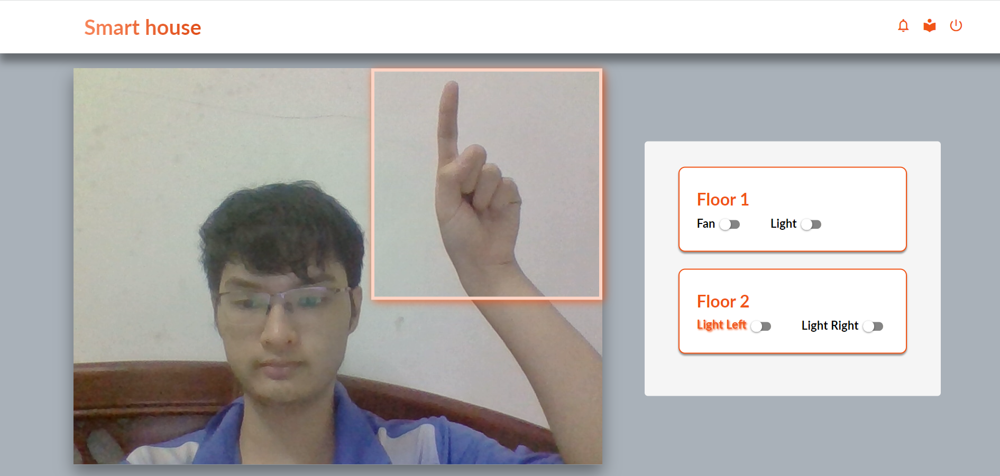
First you have to choose any device first. After the device is recognized by the system, the device's text
will be illuminated as shown in the picture
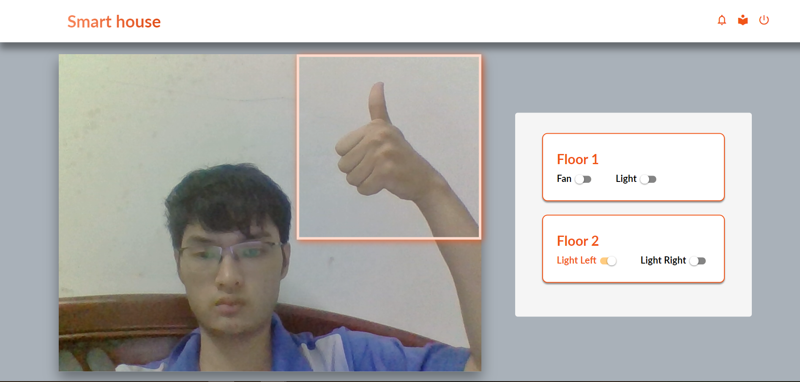
Right after that, you have to put the gesture On or Off. The device you previously selected will be turned
on or off and the toggle button moves to see if you've turned it on or off.
If you want to stop the system . You just need to give the Off gesture only. The system will then stop
processing until you want it to continue.
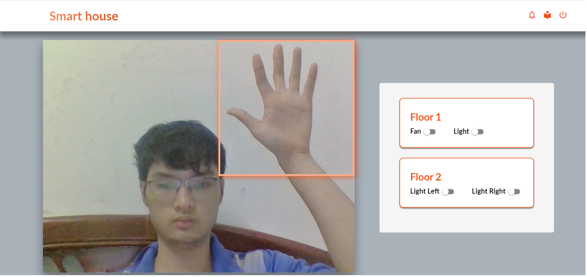
If you want the system to continue , please do the continue gesture . You can then continue to interact
with the system.
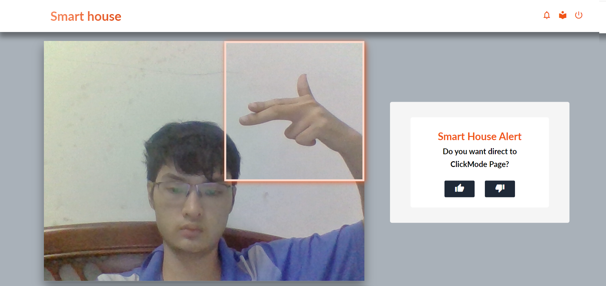
If you want to go to the clickmode page. Please do ClickMode Gesture.Then, You can then do On(Like) or
Off(Dislike) gestures to be able to make your decision. If you give device gesture, please return
clickmode for further interaction.